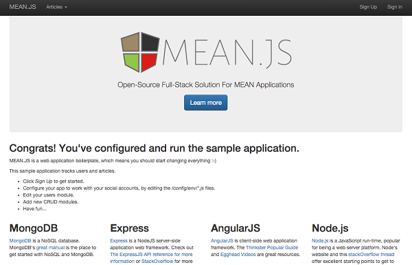

How to configure a COMPANY_NAME Debian server to host a MEAN.JS application
17745 - Build a MEAN.JS Application (MongoDB, Express.js, Angular.js, Node.js) - Debian
Difficulty: 2
Time: 30 minutes
MEAN.JS is an open-source full-stack solution for building web applications using MongoDB, Express, AngularJS and Node.js. In this article, we will install MongoDB, git, Node.js, NPM, the Bower package manager, Grunt and a sample MEAN.JS boilerplate application.
Step 1: Install MongoDB
-
Update the local package database
sudo apt-get update
- Import the MongoDB public key
sudo apt-key adv --keyserver hkp://keyserver.ubuntu.com:80 --recv 7F0CEB10
-
Create a list file for MongoDB. The list file is specific to the distribution version you are using. In this article, we will focus on Debian 7. For more information about list files, see the official MongoDB documentation
echo "deb http://repo.mongodb.org/apt/debian wheezy/mongodb-org/3.0 main" | sudo tee /etc/apt/sources.list.d/mongodb-org-3.0.list
-
Reload the package database
sudo apt-get update
-
Install MongoDB
sudo apt-get install -y mongodb-org
-
Verify MongoDB installation
mongod --version
The output should be similar to the following:
db version v3.0.7
git version: 6ce7cbe8c6b899552dadd907604559806aa2e9bd
Step 2: Install Git
-
Install Git
sudo apt-get install -y git
-
Verify Git installation
git --version
The output should be similar to the following:
Step 3: Install Node.js and NPM
NPM is the default package manager used for installing and managing packages used by NodeJS. For more information about Node and NPM, see the official NPM documentation
-
Install Node.JS
sudo apt-get install -y nodejs
To address issues with possible namespace collisions and upstream compatibility, install the legacy package
sudo apt-get install nodejs-legacy
-
Install NPM
curl -L --insecure https://www.npmjs.org/install.sh | sudo sh
-
Verify Node.js installation
nodejs --version
The output should be similar to the following:
Step 4: Install Bower and Grunt
MEAN.JS uses a package management system called Bower to manage front-end packages and Grunt to automate development processes. Both are prerequisites for building MEAN.JS applications.
-
Install Bower and Grunt using NPM
sudo npm install -g bower grunt-cli
Step 5: Download, Install and Start MEAN.JS Boilerplate Application
-
Download MEAN.JS boilerplate using Git. Because this is a third-party package, we will download and configure our MEAN.JS test application (named 'test') to run from the
/opt folder.
sudo git clone https://github.com/meanjs/mean.git /opt/test
-
Install 'test' application dependencies.
cd /opt/test
sudo npm install
This may take a few minutes.
-
Use bower to install and configure the front-end packages
sudo bower --allow-root --config.interactive=false install
-
Use grunt to start the application
sudo grunt --force
-
Once all processes start, verify the 'test' application installed by visiting the domain name or IP address of your server in a web browser, using port 3000.
http://domain_or_IP_address:3000

Conclusion
In this article, you installed MongoDB, git, Node.js, NPM, the Bower package manager, Grunt and a sample MEAN.JS boilerplate application.